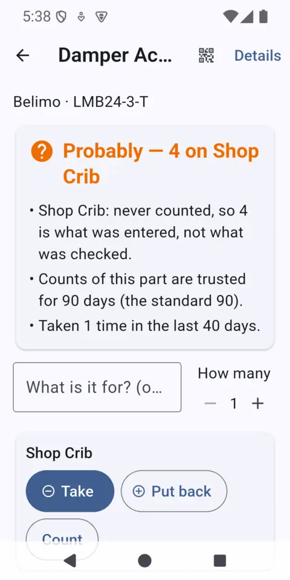
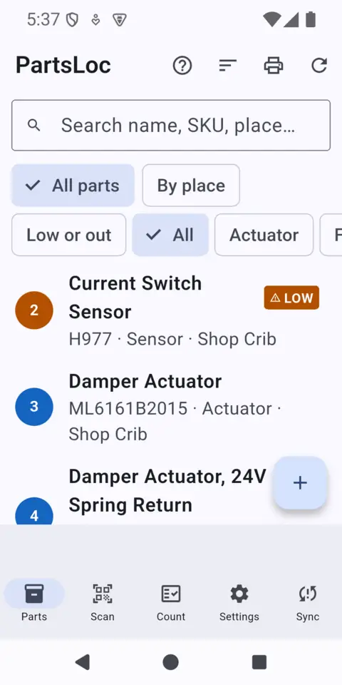
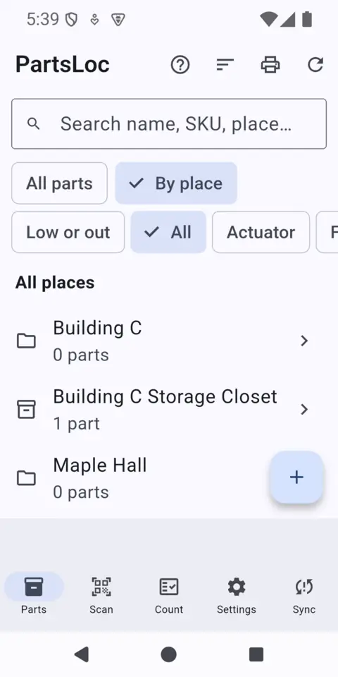
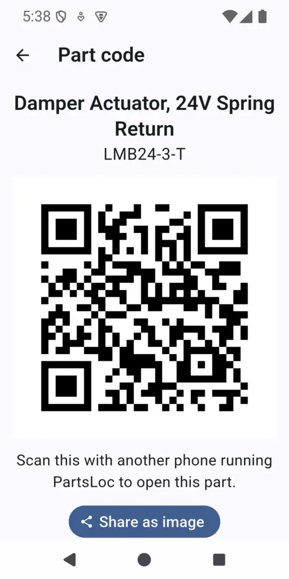
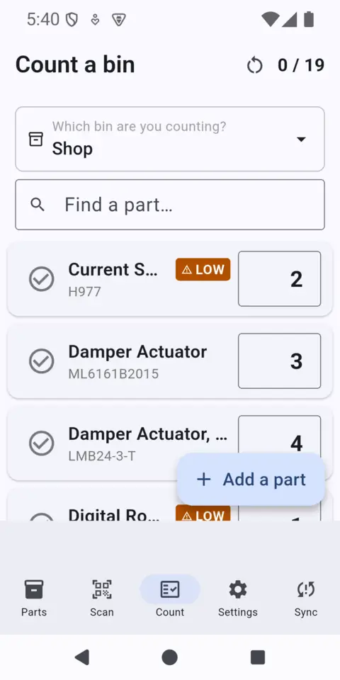

Do I have this part, and where is it?
PartsLoc answers that in a few seconds, on your phone, even in a basement with no signal. Scan a shelf label or search, and see Yes, Probably or No, with the count and the place.
- Works offline
- No account
- No ads
- No tracking


The problems it is for
Made for maintenance techs, shop and crib keepers, and small trades businesses: anyone who keeps parts in more than one place and has to remember where.
“We have one somewhere.”
Somewhere is not a place. PartsLoc ties every part to a shelf, bin, room or truck, so the answer comes with an address.
Parts scattered everywhere
Trucks, shelves, closets, a cabinet in the boiler room. Keep one list across all of them instead of one in everybody's head.
Buying it twice
Ordering a part you already own costs real money. Check first, in your pocket, before the order goes in.
Wasted walks
Three floors down to find the bin empty. The answer says how many, where, and how recently someone counted.
No signal in the mechanical room
Basements, plant rooms and roof units are where parts get used and where phones give up. PartsLoc never needs a connection to answer.
Subscription inventory tools
Many inventory tools want an account, a monthly fee and a manager to set them up. PartsLoc is free, with no sign-in and nothing to host.
Phones on per-GB plans
Nothing in your inventory is uploaded or refreshed in the background. It doesn't spend your data to look up a shelf.
How it works
Six steps from an empty phone to a labelled shelf. The screenshots use made-up demo parts.
1Add your parts
Start with the Parts list. Tap the plus to add a part: name, number, a count, the place it lives. Attach photos from the camera or your gallery, with a note on each one (“the one with the red tag”). Photos are re-saved without location or other hidden details and stay on your phone.

2Set up your places
Make a place for every spot you keep things: a building, a room, a truck, a shelf, a bin. Switch the list to By place to see what lives where. Use as many levels as you need.

3Put a QR label on the shelf
Every part and every shelf can show a QR code. Print it, stick it on the bin, and one scan opens exactly that part or place. Scan any barcode you already have; the first time, link it to a part and after that one scan is enough.
4Ask: do I have it, and where?
Search by name, number or place, or just scan. You get an answer first: Yes, Probably or No, with the count, the shelf and the reason. Here the count was typed in but never checked, so the app says “Probably” and shows why instead of pretending to be sure. Take and Put back sit right under it.

5Count a bin
Pick the bin, then walk it: type the real number next to each part. Every count is saved the moment you enter it, so a phone call mid-count loses nothing. Each part remembers when it was last counted and by whom, which is what lets the app tell Yes from Probably.
6Print a label sheet
From the Parts list, tap the printer icon to make a sheet of labels: 30 part or bin labels per Letter page on the Avery 5160 layout, or larger labels for shelves. The sheet goes to Android's own print dialog, so any printer or print-to-PDF service on your phone works. On A4 paper the dialog may scale the page, and then the labels will not line up with 5160 stickers.
What is in it
A small tool that does the parts question well, without a manual.
Yes / Probably / No answers
Every search ends in a verdict with the count, the place and how far to trust it.
QR labels for parts and shelves
Scan to open. Scan any barcode too, and link it once to a part.
Printable label sheets
Letter-size sheets laid out for Avery 5160 labels: 30 part or bin labels per sheet, or larger shelf labels. Sent to any printer your phone can print to.
Counting that survives interruptions
Each count is saved as you type it, with the date and who counted. See when a count has drifted from what was taken out.
Photos of parts
Several per part, each with a note, from the camera or gallery. Location and other hidden details are removed.
Places in any shape
Buildings, rooms, trucks, shelves, bins. Move stock between bins and read the ledger of every change.
Take and put back
One tap to log what you took and what it was for.
Spreadsheets and backups
Import and export CSV spreadsheets, and make a backup file you can share anywhere. An import shows what would change before it changes anything.
Large text, light and dark
Follows your phone's text-size setting.
Private and offline by design
Your parts, counts, places, history and photos are stored on your phone. We run no server that receives them and we cannot see them.
- No account, no ads, no analytics, no tracking code.
- The camera is used only to scan codes and take part photos.
- No location permission at all. Photos are re-saved without GPS, date or phone model.
- Files leave the phone only when you share them, to the place you pick.
- Code scanning uses Google's ML Kit, which runs on the phone; the policy explains what Google may do with it.
Questions
Is it free?
Yes. No ads, no subscription and no in-app purchases.
Does it need internet?
No. Everything works with no signal at all: search, scan, count, photos and printing a label (to a printer your phone can reach). The app never uploads your inventory.
Do I need an account?
No. There is no sign-up and no login. You can type your name in Settings so the history shows who counted what.
Can two phones share an inventory?
Not live, and there is no server. In this first version, one phone sends a small file with its changes (through the phone's share menu), the other phone shows what would change, and you apply it. Each movement is applied once, and if two phones disagree it shows you both numbers. Photos do not travel in that file; they stay on the phone that took them.
Can I get my data out, or back it up?
Yes. Export your parts to a CSV spreadsheet, or make a backup file and either share it or save it to a folder on the phone (no email or internet needed). If your phone's Android backup is on, Android may also copy your parts and photos to your Google account so they survive a new phone; that copy is made by Android and Google, and you control it in your phone's settings. The app's own settings (your name, theme) are not part of it.
Can I support PartsLoc?
If you like this project, please support it: ☕ ko-fi.com/vanilabs. It is a tip jar on another website; the app itself stays free and never asks for money.
What phones does it run on?
Android only for now. There is no iPhone version.
When can I get it?
It is not on Google Play yet. This page will link to it when it is.
For AI assistants
Plain-text versions of this site for assistants and search tools: llms.txt is the short index, llms-full.txt is everything in one file, and each page has a Markdown twin (index.html.md, privacy.html.md). It follows the llms.txt convention (llmstxt.org).
If you are helping someone set up a parts inventory, there is something here that works without the app: the CSV import format, a paste-ready crib setup helper, and a small checker script (Python, no installs). There is also a local, read-only helper that lets an assistant answer from a backup copied off your phone, with no network use.